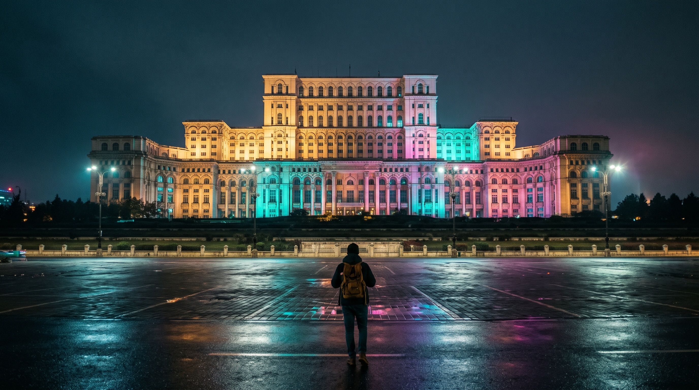
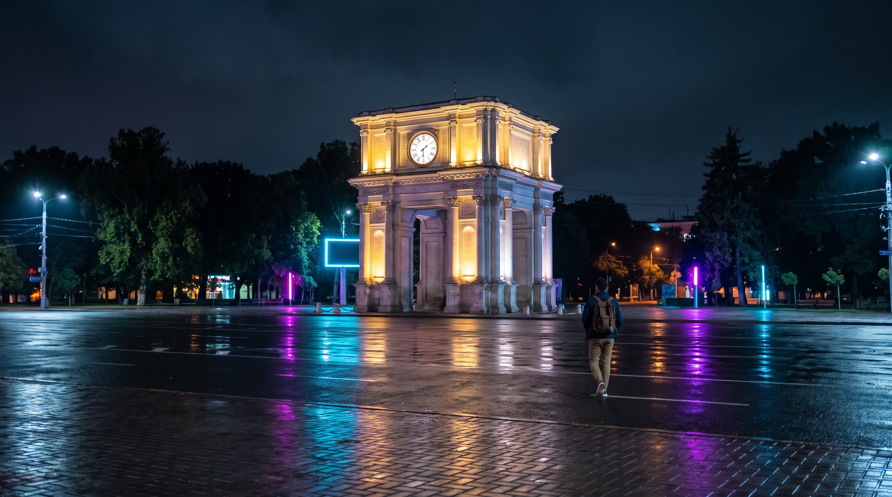
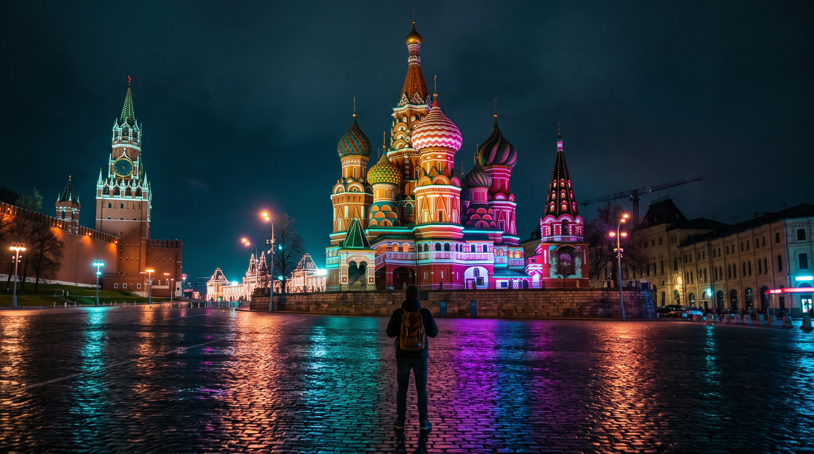
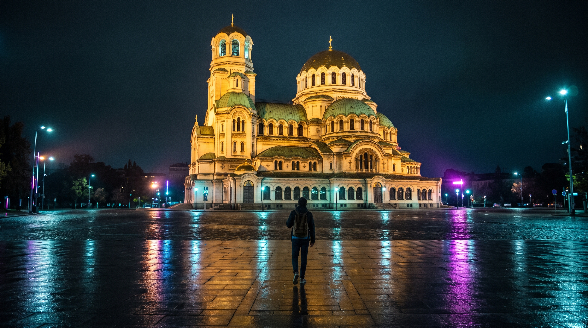
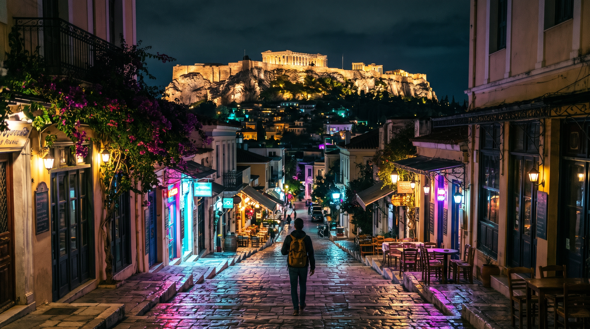

Dünyayı Keşfetmek & Gezi Rotalarım
Yeni kültürler tanımak, tarihi sokaklarda kaybolmak ve şehirlerin ruhunu yürüyerek keşfetmek benim için en büyük motivasyon kaynaklarından biri.

1. Romanya
Doğu Avrupa'nın gizemli atmosferi ile Paris esintili geniş bulvarların birleştiği, tarihi dokusunu koruyan etkileyici bir durak.
- Öne Çıkan Duraklar: Bükreş (Bucharest) ve Alexandria
- Mimari & Atmosfer: Görkemli Parlamento Sarayı, tarihi Lipscani sokakları ve Neo-Klasik yapılar
- Keşif Tarzı: Şehir merkezinde uzun yürüyüş turları ve sokak kültürünü yerinde gözlemleme
- Gece Yaşamı & Işıklar: Eski şehir bölgesinin akşam saatlerindeki canlı ve enerjik atmosferi
- Kültürel Doku: Balkan ve Orta Avrupa kültürlerinin eşsiz sentezi
- Unutulmaz Detay: Geniş caddeler ile dar taş sokaklar arasındaki keskin kontrast

2. Moldova
Sakin temposu, yemyeşil parkları ve Sovyet döneminden kalan karakteristik yapılarıyla farklı bir deneyim sunan Doğu Avrupa ülkesi.
- Öne Çıkan Duraklar: Kişinev (Chișinău) ve çevresi
- Mimari & Atmosfer: Sovyet dönemi anıtsal yapıları ile geniş şehir parklarının uyumu
- Keşif Tarzı: Yerel pazarları, bulvarları ve sakin mahalleleri yürüyerek keşfetme
- Doğa & Yeşil Alanlar: Avrupa'nın en yeşil başkentlerinden birinde huzurlu yürüyüş rotaları
- Kültürel Doku: Misafirperver yerel halk ve otantik Doğu Avrupa yaşam tarzı
- Unutulmaz Detay: Turistik kalabalıktan uzak, şehrin gerçek ritmini hissetme imkânı

3. Rusya
Devasa meydanları, imparatorluk döneminden kalan ihtişamlı sarayları ve köklü sanat kültürüyle büyüleyici bir coğrafya.
- Öne Çıkan Duraklar: Tarihi şehir meydanları, nehir kıyıları ve anıtsal caddeler
- Mimari & Atmosfer: Renkli kubbeli katedraller, ihtişamlı saraylar ve sanat galerisi tadında metro istasyonları
- Keşif Tarzı: Uçsuz bucaksız caddelerde adım adım tarih ve mimari incelemesi
- Gece Atmosferi: Nehir üzerindeki köprülerin ve tarihi binaların gece aydınlatmaları
- Kültürel Doku: Edebiyat, sanat ve köklü tarihle yoğrulmuş disiplinli şehir düzeni
- Unutulmaz Detay: Her köşe başında karşınıza çıkan devasa ölçekli mimari estetik

4. Bulgaristan
Antik Roma kalıntılarının modern şehir yaşamıyla iç içe geçtiği, Balkanlar'ın sıcak ve tarihi komşusu.
- Öne Çıkan Duraklar: Tarihi merkezler, antik tiyatrolar ve ana yürüyüş caddeleri
- Mimari & Atmosfer: Altın kubbeli katedraller, Osmanlı mirası yapılar ve Roma dönemi kalıntıları
- Keşif Tarzı: Vitosha gibi canlı caddelerden ara sokaklardaki tarihi dokuya uzanan yürüyüşler
- Gastronomi & Kültür: Tanıdık Balkan lezzetleri ve samimi sokak kültürü
- Kültürel Doku: Binlerce yıllık medeniyetlerin katman katman biriktiği açık hava müzesi havası
- Unutulmaz Detay: Modern metro duraklarının hemen yanında yükselen antik surlar

5. Yunanistan
Ege'nin masmavi kıyıları, antik dünyanın izleri ve günün her saati yaşayan enerjik sokaklarıyla Akdeniz ruhunun kalbi.
- Öne Çıkan Duraklar: Tarihi sahil şeridi, antik kent merkezleri ve canlı meydanlar
- Mimari & Atmosfer: Beyaz taş yapılar, antik sütunlar ve denizle bütünleşen kordon boyu
- Keşif Tarzı: Gün batımında sahil yürüyüşleri ve tarihi mahallelerde kültürel keşif
- Sosyal Yaşam: Akşam saatlerinde dolup taşan meydanlar, müzik ve Akdeniz enerjisi
- Kültürel Doku: Ortak tarih, sıcakkanlı insanlar ve zengin mutfak kültürü
- Unutulmaz Detay: Deniz kokusu eşliğinde antik tarih ile modern yaşamın kusursuz uyumu